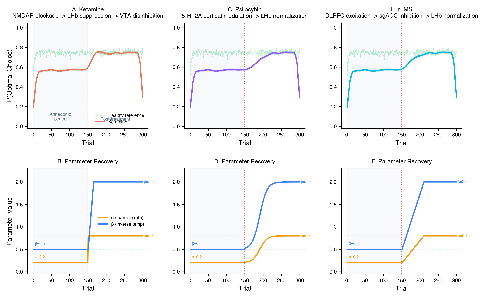

I build pipelines, dashboards, and AI tools so your team can focus on the science.
Fixed-price packages. No hourly billing. Scope defined before we start.
Review existing data workflows, identify bottlenecks, and deliver a prioritized fix list with estimated effort.
End-to-end automated data pipeline — from raw acquisition to analysis-ready output. BIDS-compliant where applicable.
Custom AI-powered assistant for your lab — literature search, protocol Q&A, or data analysis copilot using RAG.
Real tools running in real labs today.
RAG-powered Slack assistant that indexes 500+ neuroscience papers and answers protocol questions in natural language. Reduced literature search time from ~30 minutes to under 60 seconds.
What's the standard preprocessing pipeline for resting-state fMRI?
Based on Power et al. (2014) and your lab's protocol: 1) Slice timing → 2) Motion correction → 3) Spatial normalization (MNI152) → 4) Smoothing (6mm FWHM) → 5) Bandpass filter (0.01–0.1 Hz). See #preprocessing-docs for your lab-specific parameters.
Real-time monitoring system tracking preprocessing completion, QC pass rates, and team productivity across 40+ subject datasets.
Automated DICOM → BIDS conversion with built-in validation, defacing, and quality assurance. Handles multi-session longitudinal datasets.
$ python bids_convert.py --input /raw --output /bids
[1/4] Scanning DICOM directory...
Found 3 sessions, 42 subjects
[2/4] Converting with dcm2niix...
████████████████████████████ 42/42
[3/4] Running BIDS validation...
✓ Valid — 0 errors, 0 warnings
[4/4] Defacing anatomicals...
✓ Complete — 42 subjects processed
Done in 2m 14s
Monte Carlo reinforcement learning simulator modeling treatment response trajectories for depression interventions. Used for grant pilot data and hypothesis generation.

From first call to production in days, not months.
Free 20-minute call. I map your current pipeline, spot the bottlenecks, and estimate ROI for automation.
One-page proposal with fixed price, timeline, and deliverables. No surprises. You approve before anything starts.
I build it. Weekly check-ins, async updates in Slack. You keep running experiments while I automate.
Deployed, documented, and your team trained. Bug support included. The pipeline is yours, forever.
I'm Peter Zhou — an undergraduate researcher at USC working across computational neuroscience, clinical psychology, and AI systems. I've spent the past year building infrastructure inside active research labs.
I founded PRAXIS (Psychiatry Research, Analytics & eXperimental Innovation Society) to bridge the gap between clinical research questions and the engineering needed to answer them.
This summer, I'm joining the NIMH Intramural Research Program for an NIH SIP fellowship in the Experimental Therapeutics & Pathophysiology Branch.
Book a free 20-minute audit. I'll walk through your current workflow and show you exactly where automation saves time.
or reach out at czhou732@usc.edu